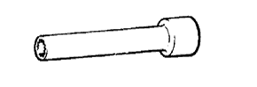

Cylindoborotsuku ASSY Preparatory Equipment
|  | 09205-16010 | Cylinder head bolt wrench |
| 09221-25026 | Piston pin remover & Replacer | |
 | (09221-00021) | Body |
| (09221-00030) | Spring | |
 | (09221-00090) | Guide C |
| (09221-00100) | Guide D | |
 | (09221-00150) | Bush D |
 | 09950-60010 | Replayer set |
 | (09951-00180) | Replacer 18 |
 | 09950-70010 | Handle set |
 | (09951-07100) | Handle 100 |
| 09011-38121 | Socket wrench (12mm) |
| Plastic hammer | ||
| RC-25 | Piston ring compressor Treated as Banzai Co., Ltd. | |
| Z-202 | Piston ring tool Treated as Banzai Co., Ltd. | |
 | PRC-12 | Piston ring compressor Treatment of Iyasaka Co., Ltd. |
| Torque wrench [3- 23n · m {30- 230kgf · cm}] | ||
| Torque wrench [5-45N · m {50-460kgf · cm}] | ||
| Caisis | ||
| Micrometer | ||
| V block | ||
| Dial gauge | ||
| Direct regulations | ||
| Caliper gauge | ||
| Cylinder gauge (50- 100mm) | ||
| Press gauge | ||
| Chicknes gauge |
| Toyota genuine engine oil | ||
| paint | ||
| Adherive 1324 V93500114 Treated as a takty Co., Ltd. |